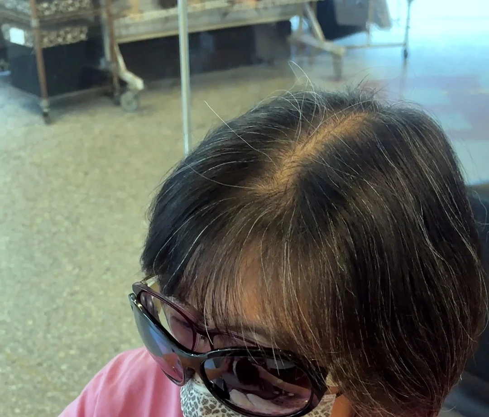
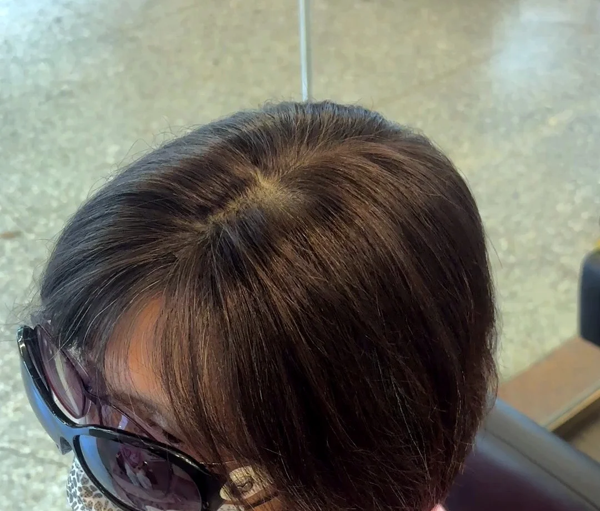
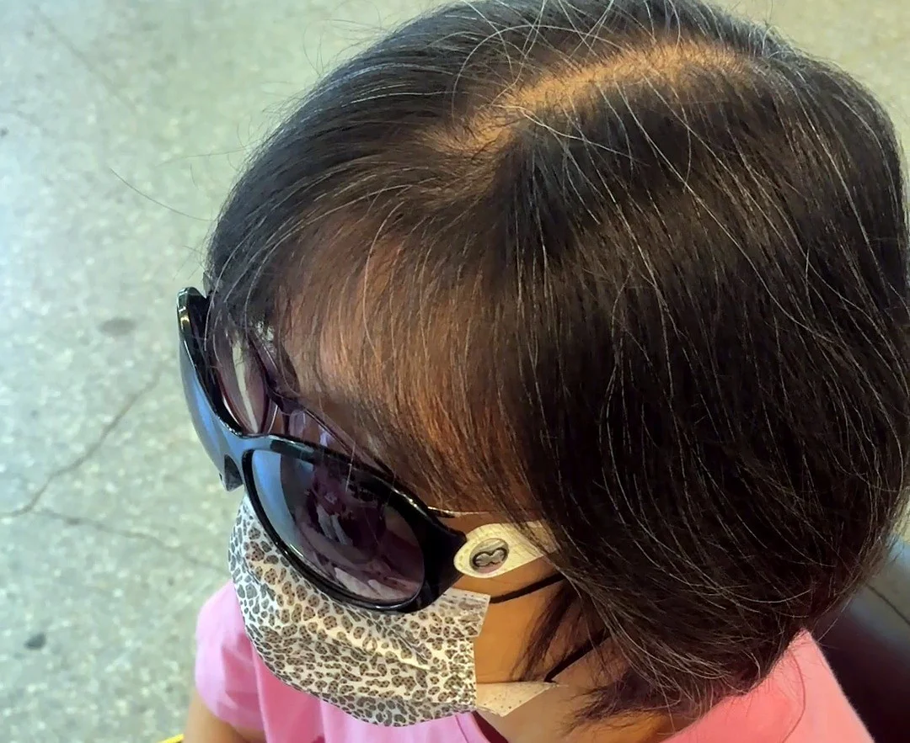
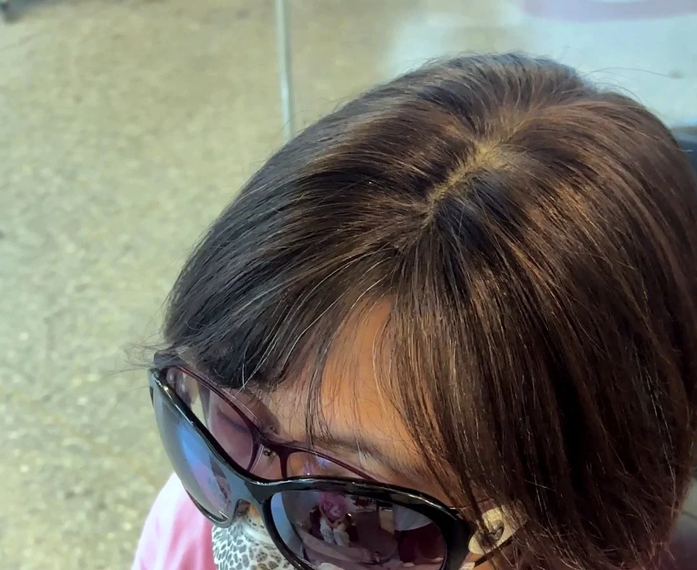
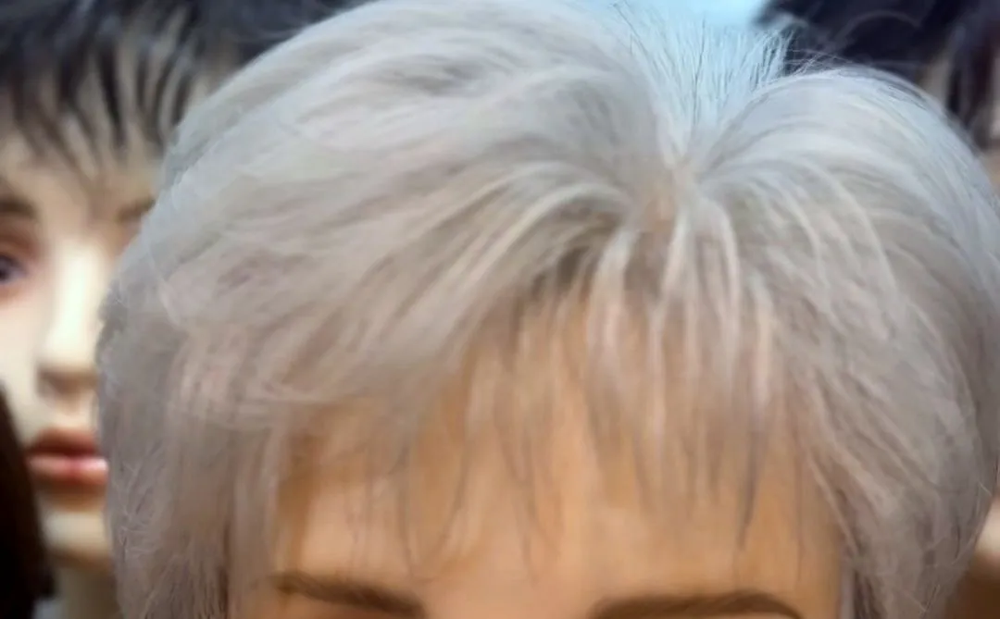

遮白髮髮片
遮白髮一定要染嗎？
髮片也可以
不一定要染；白髮集中在頭頂或分線時，用增髮片蓋住，顏色配白髮旁邊的頭髮，在店裡現場比對，想要的話也可以到自然光下再看一次。
自 2004 年在鄭州路現址・Google 評論 4.9★

髮片的顏色怎麼配？
遮白髮時，髮片顏色配白髮旁邊的頭髮（中段到髮尾）：染深棕的配深棕，自然黑的配自然黑；在店裡現場比對，想要的話也可以到自然光下再看一次。
有真髮、纖維絲與日本科技絲三種材質，可以在店裡現場配色、試戴，想要的話也可以到自然光下再看一次。




不想常跑髮廊，可以先來試試看
對染劑敏感或不想常跑髮廊的人，很適合到店裡現場比對髮色試試看，想要的話也可以到自然光下再看一次。
建議先用 LINE @995uevgh 或電話 02-2552-6562 預約，設計師一對一服務。

銀灰短髮，也能現場試戴。遮白髮髮片
遮白髮常見問題
遮白髮一定要染嗎？髮片可以嗎？
不一定要染；白髮集中在頭頂或分線時，用增髮片蓋住，顏色配白髮旁邊的頭髮，在店裡現場比對，想要的話也可以到自然光下再看一次。
遮白髮的髮片顏色怎麼挑？
顏色配白髮旁邊的頭髮（中段到髮尾）：染深棕的配深棕，自然黑的配自然黑；在店裡現場比對，想要的話也可以到自然光下再看一次。
台北哪裡可以試戴遮白髮髮片？
哈髮科技假髮在台北市大同區鄭州路23號（台北後站三角窗），台北地下街 Y13 出口搭電扶梯上來，穿過小公園約 30 秒就到，很近；週一至週六 11:30–19:30，週日公休。